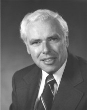

Please note: the AAS Obituaries are temporarily being hosted on this website while their full content is being ingested into the PubPub publishing platform newly adopted by the Bulletin of the American Astronomical Society. When the migration is complete, your existing links will take you to the final, migrated content. Contact peter.williams@aas.org with any questions.
Jack L. Locke (1921-2010)
Jack Lambourne Locke, a pivotal figure in the growth of Canadian astronomy following WWII, died suddenly and peacefully on 2010 April 29 at home in New Westminster, B.C., just 2 days shy of his 89th birthday. During his distinguished 36-year career as a government research scientist and as a scientific director he witnessed extraordinary growth in astronomical research across Canada. He was responsible for overseeing two major reorganizations of government-operated astronomical facilities in 1970 and 1975.
Locke was born on 1921 May 01 in the small manufacturing city of Brantford, Ontario, to John Thomas and Mabel Caroline (Lambourne) Locke. At Brantford Collegiate Institute, where he was recognized as an outstanding student, he was encouraged to pursue a scientific career. He enrolled in the Honours Maths., Physics, and Chemistry course at the University of Toronto (UT) in September 1939 at the outbreak of WWII. When his older brother enlisted for military service, Jack was tempted to follow suit. But he decided to continue his undergraduate studies which he did with distinction until the end of his third academic year. In May 1942 he delayed entering his final year and enlisted in the Canadian Navy. For the last 2 years of the war Locke was an instructor in submarine detection stationed at HMCS Cornwallis, the navy's largest training base, next to Nova Scotia's Annapolis Basin. During that posting he met his future wife, Edith Joyce (Joy) Moxon, of Annapolis Royal. At war's end he returned to UT to complete his undergraduate studies. He graduated with First Class Honours in Physics in 1946 and, on receiving his B.A., married Joy.
Locke pursued graduate studies at UT's Physics Department under two renowned spectroscopists: Professors Malcolm Crawford and Harry Welsh. Locke's assignment was to detect spectroscopically the presence of oxygen dimers (O) 2 in liquid O 2 which had been mooted to explain the anomalous variation of oxygen's magnetic susceptibility. While the homonuclear O 2 molecule has no permanent dipole moment, and therefore no rotational or vibrational spectrum in the infrared, they reasoned that out-of-phase coupled oscillations of a pair of O 2 molecules would exhibit an absorption spectrum.
Locke's observations of a rotational-vibrational band in the infrared spectrum of liquid O 2 could not be interpreted as due to the formation of dimers. Extending his observations to the compressed gas phase of O 2 , N 2 , and H 2 he proved conclusively that he had uncovered an entirely new phenomenon: pressure-induced infrared absorption in homonuclear molecules. The "Locke Effect", as it became known in Toronto's spectroscopy lab, launched a three-decade long series of studies by Welsh and his students into spectra induced by intermolecular forces.
On acquiring his doctorate in the spring of 1949, Locke accepted an appointment as Astrophysicist at the Dominion Observatory (DO), then operated by the Department of Mines & Technical Surveys (DMTS) on the grounds of the Department of Agriculture's Experimental Farm in west-end Ottawa. Its Director, recently appointed in 1946, was shaking up the 4 decades-old institution's divisions of astronomy and geophysics, much needed following 15 years of restraint due to the Great Depression and WWII. Carlyle S. Beals put Locke in charge of modernizing the DO's solar program. It was a good time to be starting a spectroscopic career in Ottawa. Beals himself had extensive experience in both laboratory and astrophysical spectroscopy. Gerhard and Luise Herzberg had returned to Canada from Yerkes Observatory in mid-1948 where Gerhard was building and staffing a major spectroscopic laboratory across town at the National Research Council of Canada (NRC).
Locke designed an all-mirror high dispersion grating spectrometer that employed the new generation of infrared detectors emerging from former wartime laboratories. He explored the solar spectrum in the wavelength region of 2.4 microns together with Luise Herzberg. They identified hitherto unreported absorption lines due to the first overtone rotation-vibration bands of carbon monoxide (CO) originating in the solar atmosphere, only to be scooped in publishing the discovery by a team from the University of Michigan. Locke and Herzberg published instead a quantitative study of the variation in the seasonal abundance of CO in the Earth's atmosphere above Ottawa.
In 1954 Locke disassembled the spectrometer and transported it to a remote location 75 km north of Kapuskasing, Ontario. He hoped to obtain slit spectra at high dispersion of the chromosphere at second and third contact during the total solar eclipse of June 30. Clear weather prevailed during the extensive surveying and setting-up of instruments under wilderness conditions. To everyone's chagrin clouds covered the Sun throughout the day of the eclipse.
Beals was keen to have DO participate in significant ways to the International Geophysical Year (July 1957 to December 1958). For the solar program he purchased a narrow-band (0.6 Angstrom) birefringent filter tunable at Hα for detecting chromospheric flares. Locke designed and assembled the optics, camera, and timing devices for a self-contained solar telescope for time-lapse photography that he mounted piggy-back on DO's venerable 15-inch equatorially-mounted refractor. The Ottawa flare telescope contributed observations of many hundreds of flares and hundreds more of eruptive prominences to the World Data Centers during IGY.
Locke's promotion to Chief of the Stellar Physics Division at DO in 1955 led to discussions with Beals regarding long-range plans for the Division. Aware of the rapid growth of radio astronomy elsewhere, they envisioned a radio observatory as an essential adjunct to a revitalized DO. Beals saw radio studies of our Galaxy as a natural extension of the research into galactic dynamics carried out at the Dominion Astrophysical Observatory (DAO) in Victoria since its inception. Beals quickly obtained approval in 1956 to finance what became the Dominion Radio Astrophysical Observatory (DRAO) on condition that the new observatory be located not far from DAO. Locke and P. E. (Ed) Argyle surveyed Southern B.C. for a mountain valley with minimal made-made radio interference. A broad, flat, mountain-rimmed valley at White Lake in B.C.'s Okanagan Valley, just south of Penticton, easily met all the criteria. The half-dozen years spent in site-surveying, planning, building, staffing, and making the first observations at DRAO were undoubtedly the most satisfying and fulfilling years of Locke's astronomical career. He lived in Penticton with Joy and their children during the years 1959-62 while he was the first Officer-in-Charge of the new observatory.
In the autumn of 1962 Locke returned to Ottawa to resume his role as division chief and to plan an experiment for the Canadian airborne expedition to observe the total eclipse of 1963 July 20. He proposed to scan with a photoelectric photometer the intensity of emission in the Sun's green coronal line over a large field of view. Data were obtained this time: green-line emission was detected out to 2 solar radii above an active region on the eastern solar limb.
When Beals retired at the end of June 1964 many expected that Locke would succeed him as Director of the Observatories Branch. Instead DMTS decided it was time for a geophysicist to take charge. So it was that John H. Hodgson, a respected seismologist, was appointed Director. Prior to retiring, Beals had laid the groundwork for establishing a national observatory in which the centrepiece was to be the 3.8 m Queen Elizabeth II Telescope located at the best possible site in Canada. Beals intended that the astronomical units at DO would be transferred to this site, which was selected to be on Mt. Kobau overlooking the South Okanagan Valley in the B.C. interior. Left with a subordinate role in the development of Mt. Kobau, Locke faced an uncertain future. R. M. Petrie, Director of DAO and the scientist in charge of the QEII Project, was concerned that other telescopes proposed for Mt. Kobau would have a distracting effect on the quick completion of the QEII Telescope. Unwilling to mark time for an undefined number of years until his Division's needs were met, Locke resigned from the DO, effective 1966 April 01.
He immediately transferred to the Radio Astronomy Group in the Radio & Electrical Engineering Division (REED) at NRC, also in Ottawa. Locke joined a team developing a new technique of using wide-band magnetic-tape recorders and transportable atomic frequency standards to operate two widely separated radio telescopes directed at the same point-like source as a phase-coherent interferometer. The revolutionary new idea, occurring independently to several people in the world, was that the separately recorded radio signals could be correlated a posteriori with a digital computer, provided sufficiently precise time information was imprinted on each record. The feasibility of the new technique was proven in the Spring of 1967 when interferometer "fringes" were detected in records made simultaneously with the 26-m dish at DRAO (Penticton) and NRC's 46-m dish at the Algonquin Radio Observatory (ARO) at Lake Traverse (Ontario), a baseline of 3074 km. Long baseline interferometry made possible the measurement of the diameter of quasars in the range of 10-2 sec of arc or less. Locke is among the 9 Canadian scientists whose names are imprinted on the prestigious Gold Medal of the Rumford Premium awarded the Canadian team in 1971 for their pioneering work in the field of long baseline interferometry. Two American teams of radio astronomers, from NRAO-Cornell and MIT, succeeded in their long baseline efforts weeks after the Canadians. They received separate Rumford medals the same year.
While Canadian radio astronomers triumphed in a new field of endeavour, Canadian optical astronomers were locked in a bitter dispute over the choice of Mt. Kobau for Canada's premier optical telescope. The furor led to the cancellation of the QEII project by the federal government in August 1968. Consequent to the cancellation a recommendation was implemented that had been made in 1963 by the Royal Commission on Government Organization: that all governmental astronomy be combined under one agency. A new Astrophysics Branch was set up by NRC on 1970 April 01 to jointly administer DAO, DRAO, ARO, and the Stellar Physics Division of DO. Locke was appointed Chief of the Astrophysics Branch, as well as Associate Director of NRC's REED which served as the branch's headquarters.
One of his earliest tasks was to deal with the fallout from the cancellation of the QEII project. A positive outcome was the successful negotiation with a French group seeking a partner to build a similar-sized telescope on Mauna Kea, Hawaii. Although Graham Odgers of DAO spearheaded the initial overtures with the French astronomers, Locke was responsible for shepherding the proposal for a joint Canada-France venture through the various review boards in the federal bureaucracy. Once the Canada-France-Hawaii Telescope (CFHT) was approved, Locke became a member of the Board of Directors of the CFHT Corp. (1974-79), and served as its Chairman in 1976. By all measures the CFHT, Canada’s first international astronomy project, has been a resoundingly successful partnership in no small measure due to the careful thought Locke and the other founding members invested in crafting the agreement and governance structure.
In 1975 a further reorganization within NRC saw the creation of the Herzberg Institute of Astrophysics (HIA) with Jack Locke as its first Director. At its inception the HIA combined the Astrophysics Branch with the Spectroscopy and Space Physics Sections of the Division of Physics, and the Upper Atmospheric Research Section of REED. As Director, Locke had to struggle against downward trends in the national economy that constrained his Institute's budget and threatened cuts to his staff. The rapid growth of astronomy departments in Canada's universities meant growing demands for access to national facilities operated or supported by HIA (ARO, CFHT, DAO, and DRAO) and for a role in the governance of those facilities. Canadian radio astronomers had divided priorities: to resurface the 46-m dish at ARO for mm-wavelength observations, or to build an all-Canadian Long Baseline Array that would provide 2-dimensional mapping of quasars at unprecedented spatial resolution. Locke was deeply dismayed by the growing rift in the radio-astronomy community. These pressures so vexed the last few years of his tenure as Director that he resigned on 1985 March 22 and retired. He had sacrificed what could have been an outstanding career in radio astronomy in order to secure better facilities for all Canadian astronomers. For assuming this task, and all the risks it entails, the astronomical community in Canada owes Jack Locke a sincere debt of gratitude.
For his important contributions to Canadian astronomy, Locke was elected a Fellow of the Royal Society of Canada in 1969, and a Member of the Order of Canada in 1997. He was a long-time member of the American Astronomical Society, the Canadian Association of Physicists, the International Astronomical Union, the International Union of Radio Science (Chairman of Commission V (Radio Astronomy) 1972-75), the Royal Astronomical Society of Canada (National President (1972-74) and Honorary President (1998-2001)), and in 1971 a Charter Member of CASCA (Canadian Astronomical Society/Société Canadienne d'Astronomie).
Locke's normally genial demeanour masked a highly competitive nature which was apparent through his keen interest in sports, either as participant or spectator. He was a formidable opponent in any contest, a characteristic which probably did not mellow during his retirement years while he indulged in his favourite games of curling and golf.
Jack Locke was predeceased by his wife Joy in 2004. He is survived by his children, John Andrew (Rosemary) of New Westminster, B.C., and Marion Jane Green (David) of Houston, Texas, and 2 grandchildren.
Obituary written by: V. Gaizauskas
BAAS Citation: BAAS, 2012, 44, 007